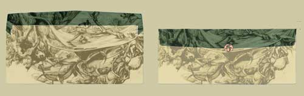
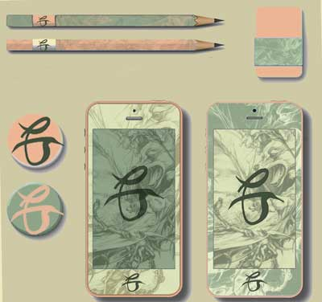
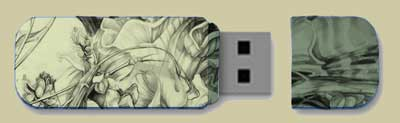

Operated out of Montauk, NY, AKAW's custom line of surfboard and surfing products was designed to provide a fresh new look in the tradition of wooden boards. AKAW surf shop uses only recycled and reclaimed woods making our product the ecologically sound and economically safe alternative to our competitors. On the boardwalk it is easy to become overwhelmed by the plethora of imitation companies characterized by garish and harmful dye processes and cheap non-recyclable plastics; AKAW provides a stylish and green alternative. Created for the beginner surfer of any age, AKAW boards will help you catch that perfect wave.
Above: Sample Surfboard
Above: Sample Skateboard
Above: Sample Longboard
Bombora's new line of surfboards will focus primarily on craftsmanship and customer satisafcation. Operated out of Montauk, NY, our small, locally owned and operated business emphasized one-of-a-kind, handcrafted boards custom-made and painted by our talented group of artisans and craftsmen. These designs can be commissioned on an individual basis or the customer can select from a number of themes provided on our website.
Our goal is to be more ecologically minded and less profit driven. In order to ensure the quality of its porducts, Bombora is not only operated locally but also makes use of many local materials. Our company offer the most cutting edge in surfboard manufacturing utilizing composite technology (foam and fiberglass) that will be ecologically friendly. These surfboards will be able to be customized on an individual basis using 100% recycled EPS foam cores finished with epoxy resins allowing for exquisite control. Additionally more traditional boards, each individually handmade, will be made from a variety of woods.
As a non-profit organization, all profits from sales go towards protecting America's plant and animal endemic species. Our artists concentrate on the thematic links within nature in order to constantly remind our customers of their role in helping to preserve the health of our local ecosystems.
We value our customers and encourage them to post their feedback and recommendations on our blog in addition to videos and photographs documenting their experiences using our products.
Tagline: Break from the reef.

Above: Sample Notebook

Above: Sample Ringed Notebook and Looseleaf Template

Above: Sample Mailing Envelopes
Above:iPhone Case and Desk Supples
Above: Sample Flashdrive

Above: Sample Surfboard
INSERT DESIGN III: MUST REDO FINAL LOST